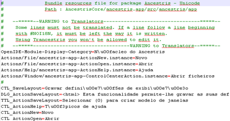
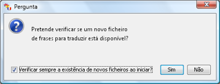

Um pacote (ou ficheiro de pacotes) é um arquivo zip que contém
todas as frases que tem de traduzir com o Trancestris.
O seu nome é "Ancestris_Bundles.zip".
Um pacote é um arquivo de idioma. Cada idioma tem o seu pacote apropriado.
Por exemplo, um pacote grego será chamado
"Bundle_el.properties", um pacote sueco é chamado
"Bundle_sv.properties", um francês
"Bundle_fr.properties", etc.
O principal é o inglês, chamado
"Bundle.properties"
(é Bundle.properties e não Bundle_en.properties).
Claro, não terá que tratar disto, o Trancestris fá-lo por si.
Com o que é que se parece um pacote?
Não tem de usar um editor externo para editar o pacote. Pode fazê-lo, claro,
mas não precisa. O Trancestris está lá para si. Só para sua
informação, eis uma captura de ecrã de parte do pacote português
(Bundle_pt.properties) que podemos encontrar na pasta
AncestrisCore/ancestris.app/src/ancestris/app

Cada subpasta do repositório origem tem pacotes para cada idioma.
Por exemplo, a pasta
AncestrisCore/core/src/ancestris/core/actions
tem os ficheiros Bundle.properties, Bundle_fr.properties, Bundle_sv.properties,
Bundle_fi.properties, etc..
Quando o Trancestris inicia, é feita uma consulta ao repositório do
Ancestris/Trancestris onde os pacotes estão gravados. Se houver um novo
disponível, será avisado e é-lhe perguntado se quer ou não transferi-lo.

As explicações seguintes são importantes, por favor, leia-as atentamente ;-)
Aqui tem algumas sugestões que é sempre bom saber:
|
|
|